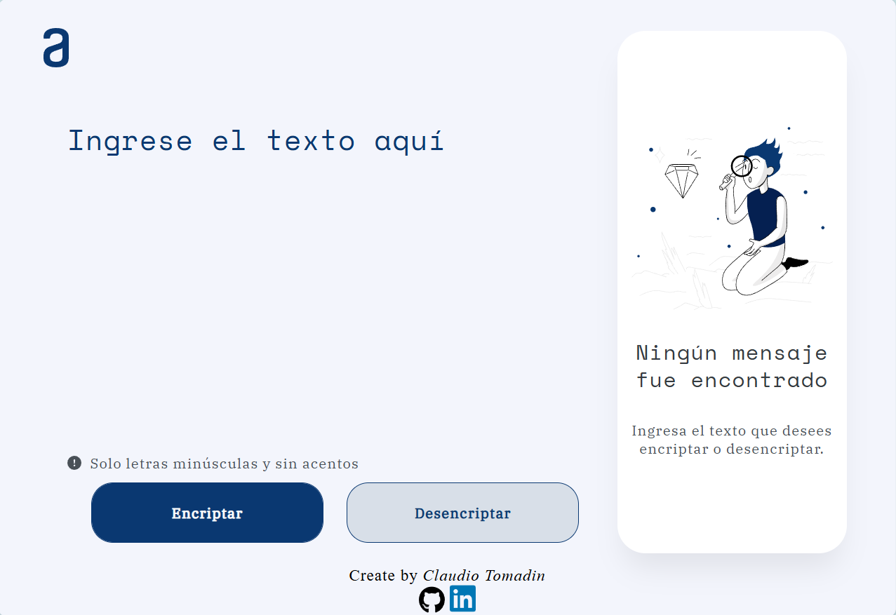
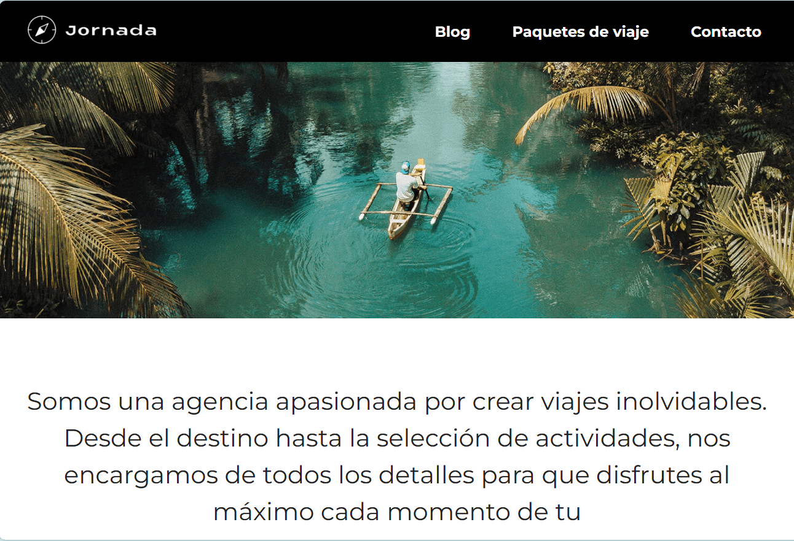
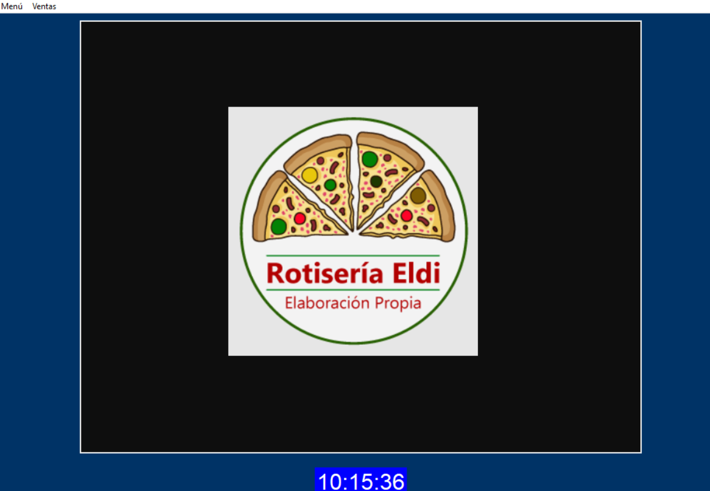

PORTFOLIO



Hola, soy Claudio Tomadin un apasionado programador front-end y técnico electromecánico con experiencia en crear soluciones innovadoras y eficientes en el ámbito del desarrollo web y el mantenimiento técnico. Con un enfoque en la optimización de la experiencia del usuario, domino tecnologías como HTML, CSS, JavaScript y frameworks modernos para desarrollar interfaces atractivas y funcionales.
Mi experiencia como técnico electromecánico me ha permitido combinar habilidades técnicas y prácticas, destacándome en la resolución de problemas y el trabajo en equipo. Mi capacidad para adaptarme a los desafíos y aprender rápidamente nuevas herramientas y tecnologías me convierte en un profesional versátil, listo para enfrentar proyectos de alta complejidad.
Estoy comprometido en aportar valor a través de soluciones tecnológicas de vanguardia, buscando siempre mejorar la eficiencia y la funcionalidad en cada uno de los proyectos que desarrollo.
Esta formación es una completa guía de aprendizaje para mejorar la relación que creas con tus expectativas profesionales. En primer lugar, aprenderás a identificar las demandas del mercado, y así dirigir tus esfuerzos hacia la consecución de ese codiciado puesto de trabajo.
En esta formación lo primero que aprenderás será sobre Lógica de Programación, que es la base de cualquier carrera o profesión relacionada con tecnología. Aprender la lógica de programación es fundamental para el desarrollo de software porque proporciona las bases para crear, analizar y resolver problemas computacionales de una manera estructurada y eficiente.
La educación técnica en electromecánica capacita en instalación, mantenimiento y reparación de sistemas eléctricos y mecánicos, con enfoque en prácticas y seguridad. Los egresados pueden trabajar en diversas industrias.
El camarero atiende a los clientes, toma pedidos, sirve comidas y bebidas, y asegura un buen servicio en mesa. El barman prepara y sirve bebidas, gestiona el inventario del bar y mantiene el área de trabajo limpia y organizada. Ambos roles buscan ofrecer una experiencia agradable al cliente.
El ayudante de electricista asiste en la instalación, mantenimiento y reparación de sistemas eléctricos. Colabora con el electricista principal en tareas como cableado, montaje de equipos y pruebas de seguridad, siguiendo normas técnicas y de seguridad.
El trabajo en un minimercado implica la gestión de inventario, atención al cliente, manejo de caja, reposición de productos y control de fechas de vencimiento. Los empleados deben mantener el orden y limpieza, realizar ventas, y a menudo ayudan en la recepción de mercadería y tareas administrativas básicas. El objetivo es asegurar una experiencia de compra fluida y eficiente para los clientes.